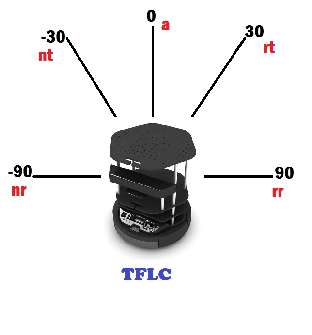
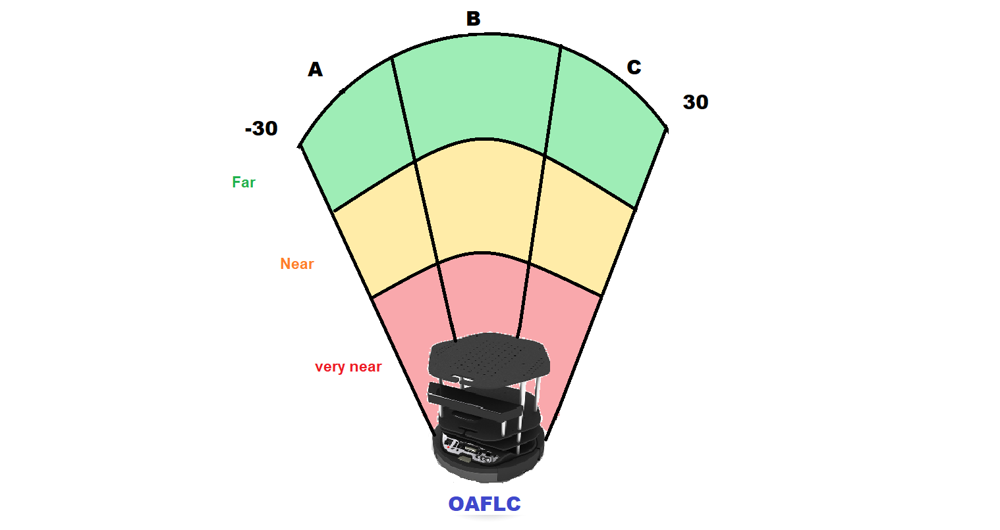

Design of a Fuzzy Logic Controller(FLC) for mobile robot navigation in an unknown environment.
Implemented the Tracking FLC and Obstacle Avoidance FLC on TurtleBot2 robot in simulation
Project Outline:
Accessed stereovision point-cloud data and laserscan data. Defined membership functions for Obstacle Avoidance FLC and Tracking FLC inputs - distance between the robot and the target, distance between the robot and obstacle and the angular presence of the same.It included the design of If-Else fuzzy rules for OAFLC and TFLC. Fuzzy Inference System design was performed and defuzzification techniques were implemented.
Methodology
The Takagi-Sugeno-Kang fuzzy inference technique and the Centroid defuzzification methods are used to implement our proposed controller.The TSK approach computes the output of the If-Else rules as a linear expression made up of weighted conditional components. Elaborately, the FIS setup processes all If-Else conditional statements with the weights generated on the basis of the membership functions and computes a new weight for execution of the condition. The Centroid defuzzification process computes a normalized weight distribution for conditions and thereafter their weighted sum to generate final numerical output values.The Gazebo simulation environment was used with a customized design of the world cluttered with obstacles. Weighted behavior fusion for both FLCs to obtain final robot commands.
 Results:
The robot was successfully able to navigate through the environment and avoid obstacles enroute reaching the target.The controller was tested on several terminal states as well as environments